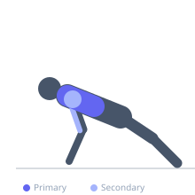

Exercise guide / Feet-Elevated Ring Push-Up
Feet-Elevated Ring Push-Up
A challenging combination of ring instability and decline body angle that shifts the loading emphasis toward the upper and clavicular portions of the pectoralis major. With feet elevated on a bench and hands in gymnastic rings, the athlete must simultaneously stabilize the unstable rings and generate pressing force, creating significant demands on the chest, anterior deltoid, and scapular stabilizers.
Primary muscles
pectoralis major clavicular
pectoralis major sternal
Secondary muscles
deltoid anterior
triceps lateral head
Stabilizers
pectoralis minor
infraspinatus
supraspinatus
transverse abdominis
Equipment
Gymnastic Rings
Flat Bench


Starting position
- Set rings at approximately knee height. Place feet on a sturdy bench behind you, hands in rings below your shoulders. Body forms a decline plank position with arms extended.
Setup
- Secure rings at a consistent height. The elevation of the feet relative to hand height determines the degree of decline. Set rings close together (shoulder width) for more chest emphasis.
Steps
- Step 1: Begin in the top position with arms extended, body forming a straight inclined plank from feet (elevated) to hands (rings below).
- Step 2: Lower your chest toward the rings, allowing elbows to flare slightly while keeping rings stable.
- Step 3: Descend until chest is level with or just below the rings.
- Step 4: Press powerfully back to the starting position, squeezing the chest at the top.
Coaching cues
- Turn the rings out at the top — externally rotate wrists
- Keep the body in one rigid plank — no sagging or piking
Breathing
- Inhale on descent, exhale on the press upward.
Range of motion
- Full range from arms extended to chest at ring level. Turn rings out slightly at top position (rings turn out or RTO) to increase pectoral contraction.
Tempo
- 3-1-1-1 (3s descent, 1s pause at bottom, 1s press, 1s RTO hold)
Common mistakes
- Letting the rings wobble uncontrollably — build ring stability before adding feet elevation
- Pike hips to reduce difficulty, breaking the straight line
- Flaring elbows excessively causing shoulder impingement
Safety
- Establish proficiency with flat ring push-ups before elevating feet
- Ensure the bench is stable and will not slide when feet are placed on it
Training
- strength: 4–8 reps
- hypertrophy: 8–12 reps
- strength: 3–4 sets
- hypertrophy: 3–4 sets
- Rest: {'strength': 150, 'hypertrophy': 90}